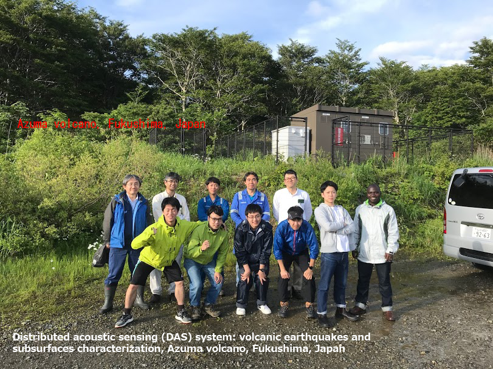
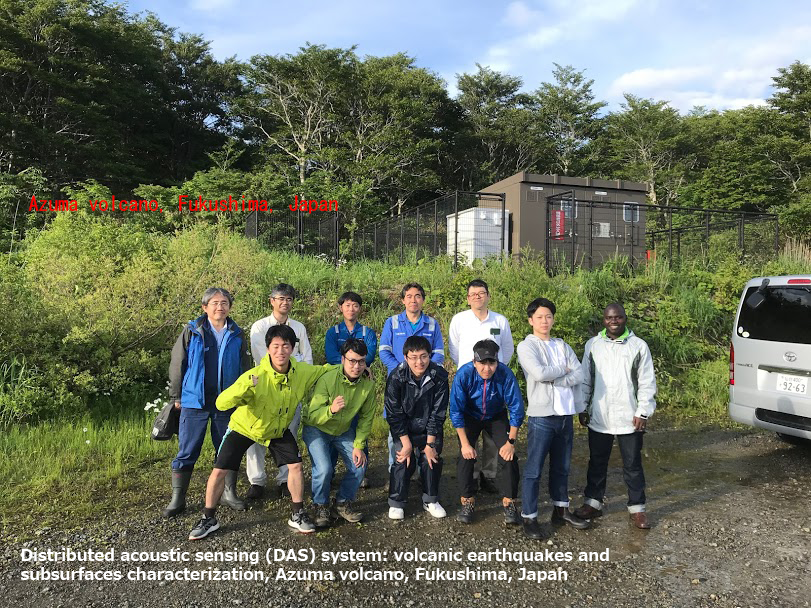

About Me
I am Thystere Matondo BANTIDI, a Research Associate at Association for the Development of Earthquake Prediction (ADEP), Tokyo, Japan. Before joining ADEP, I was a postdoctoral fellow at Research Center for Prediction of Earthquakes and Volcanic Eruptions, Tohoku University, Sendai, Japan, under the supervision of Prof. Satoshi Miura and Associate Prof. Mare Yamamoto. I received my Ph.D. in Geophysics from Tohoku University (Solid Earth Physics Laboratory, Department of Geophysics, Graduate School of Science), Sendai, Japan, under the supervision of Prof. Takeshi Nishimura and a B.S. in Physics from the University of Kinshasa, DR Congo. My general research interest surrounds the probabilities of occurrence and precursory warnings of natural hazards, with an emphasis on earthquakes, tsunamis, and volcanoes. My primary research interest is on the characteristics of the triggering and occurrence probability of large earthquakes and the intensity of hazardous ground motions. Indeed, earthquake predictability, the degree to which the future occurrence of earthquakes can be determined from observable behavior, has proven elusive. This lack of understanding is the gap in our knowledge that I am hoping to fill with my research. I ension that my results could help reduce earthquake losses by improving community preparedness and resilience.